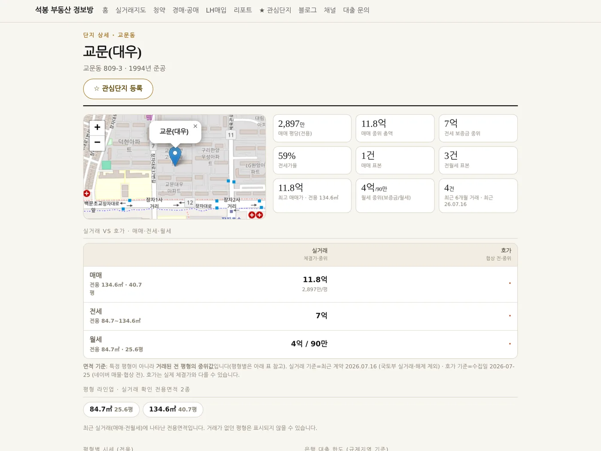
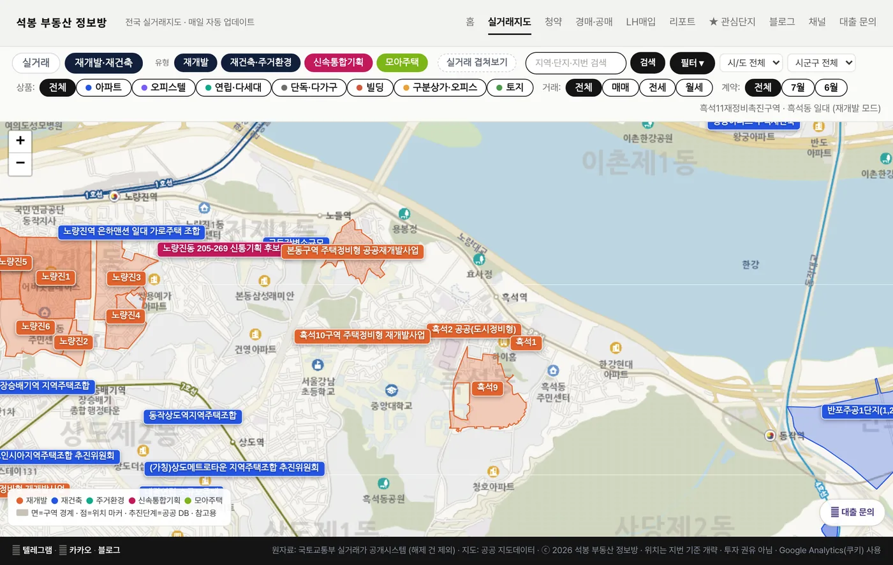
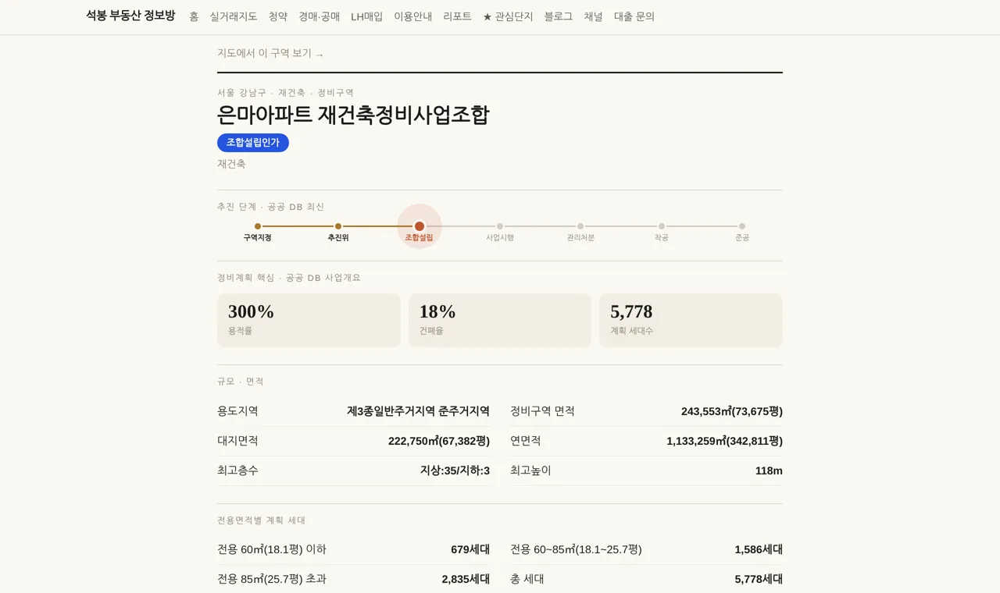
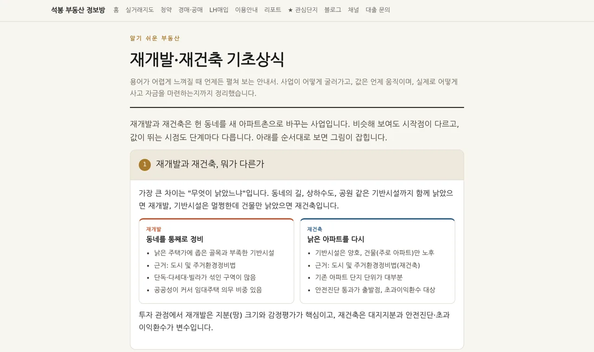
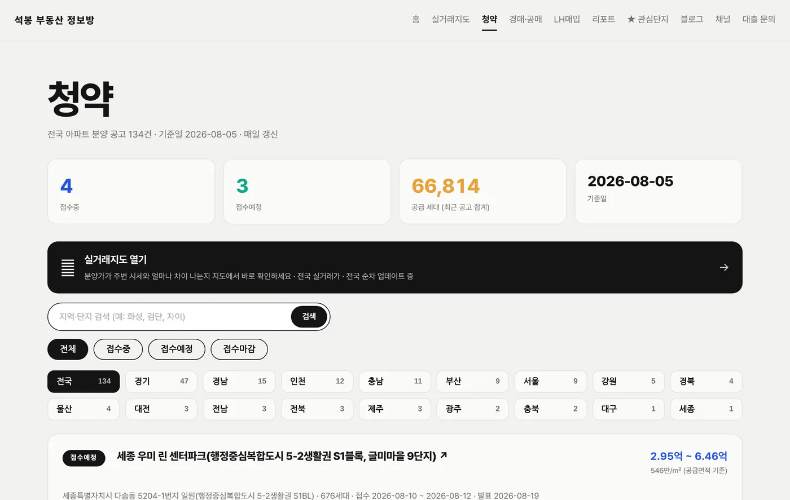
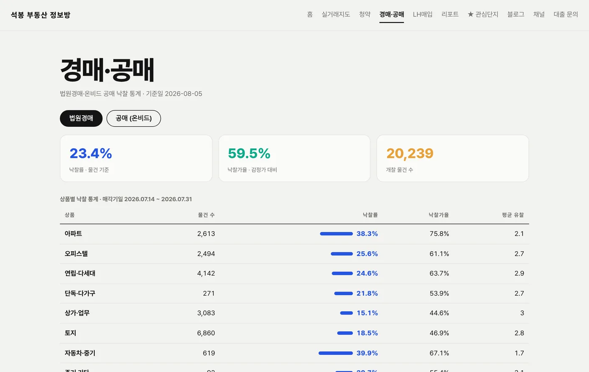
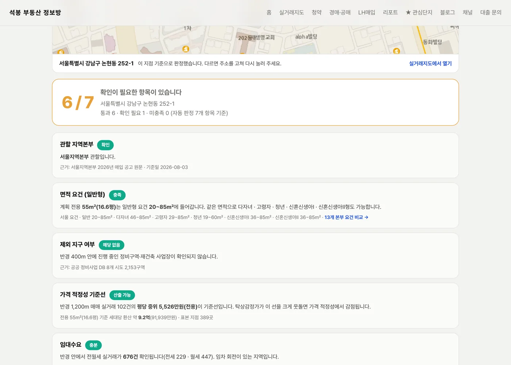
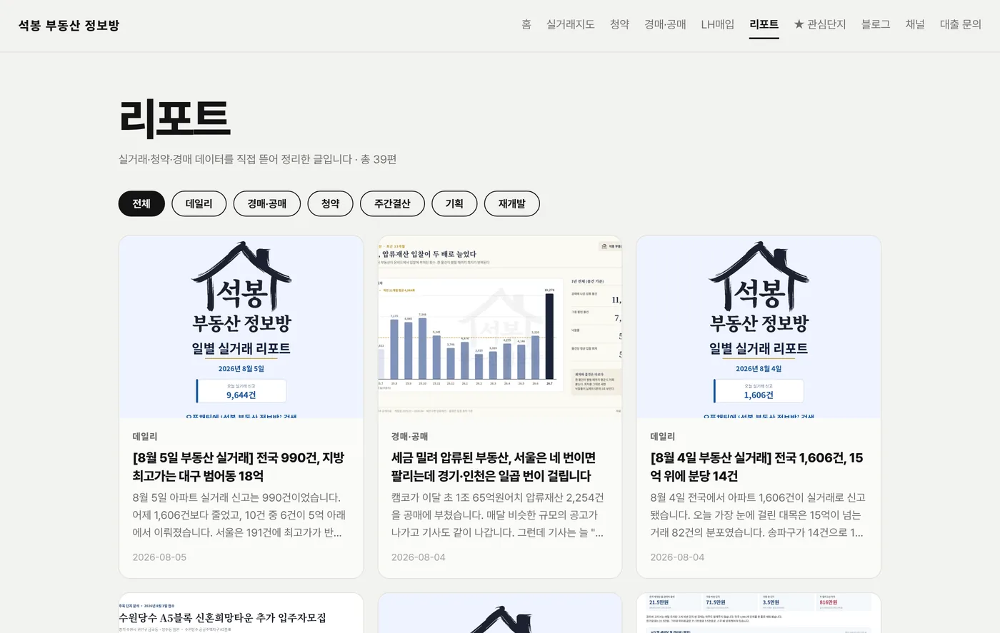
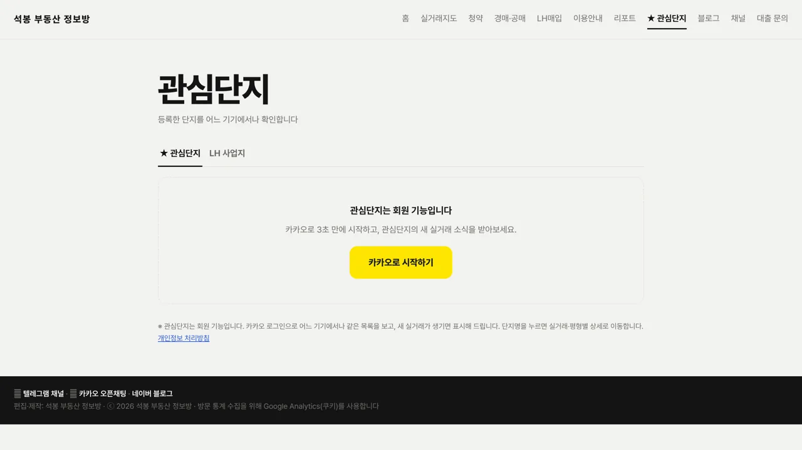

이용 안내
메뉴마다 무엇을 볼 수 있는지 실제 화면으로 정리했습니다.
국토교통부 실거래 신고 자료를 매일 받아 지도와 표로 바꿔 놓은 사이트입니다.
실거래지도
가장 많이 쓰시는 메뉴입니다. 전국에서 신고된 실거래를 지도 위에 그대로 얹었습니다. 아파트뿐 아니라 오피스텔·빌라·단독·상가·빌딩·토지까지 봅니다.

- 위쪽 검색창에 단지명·지역·지번을 넣으면 그 위치로 바로 갑니다
- 지도 위 말풍선이 실제 신고된 거래 한 건입니다. 금액과 면적이 바로 보입니다
- 매매·전세·월세를 나눠 보거나 상품 종류로 걸러 볼 수 있습니다
- 말풍선을 누르면 그 단지의 실거래와 현재 호가를 나란히 비교해 줍니다
단지 상세
지도에서 단지를 누르면 들어가는 화면입니다. 그 단지 하나만 깊이 봅니다.

- 평형별 시세가 나뉘어 있습니다. 같은 단지라도 평형마다 값이 다릅니다
- 연도별 시세 추이는 과거 10년치 실거래에서 뽑은 것입니다
- 관리비와 은행 대출 한도 참고치도 함께 봅니다
- 세대수·준공년도·가까운 지하철과 학교까지 한 화면에 있습니다
재개발·재건축
실거래지도 위쪽에서 모드를 바꾸면 정비구역이 뜹니다. 서울과 주요 광역시의 구역을 지도에 얹었습니다.

- 구역을 누르면 추진 단계가 한 줄로 보입니다. 지금 어디까지 왔는지 알 수 있습니다
- 용적률·건폐율·예정 세대수 같은 정비계획이 확정된 곳은 숫자로 나옵니다
- 그 구역 법정동의 시세가 몇 년간 얼마나 올랐는지 그래프로 봅니다
- 구역 안팎의 최근 실거래도 함께 붙습니다
추진 단계는 이렇게 읽습니다
재개발·재건축은 어느 단계에 있느냐가 값을 좌우합니다. 그래서 구역마다 일곱 칸짜리 막대를 두고 지나온 칸은 채우고, 지금 있는 칸은 색으로 표시했습니다.

- 구역지정 정비구역으로 묶인 단계입니다. 재건축은 안전진단이 여기 들어갑니다
- 추진위 주민들이 조합을 만들 준비 기구를 꾸린 단계입니다
- 조합설립 조합이 인가를 받았습니다. 사업 주체가 생긴 것이라 여기서 한 번 값이 움직입니다
- 사업시행 무엇을 몇 채 짓겠다는 계획을 인가받은 단계입니다
- 관리처분 내 몫이 얼마인지, 추가로 낼 돈이 얼마인지 확정됩니다. 불확실성이 크게 줄어드는 지점입니다
- 착공 이주와 철거를 마치고 공사가 시작됩니다
- 준공 입주입니다
용어가 어려우면 기초상식부터
조합원 입주권, 프리미엄, 비례율, 감정평가액 같은 말이 낯설 수 있습니다. 따로 정리해 둔 안내서가 있으니 여기부터 보시면 나머지 화면이 훨씬 잘 읽힙니다.

- 재개발과 재건축이 어떻게 다른지부터 시작합니다
- 단계마다 값이 왜 움직이는지, 그리고 거래가 막히는 시점을 짚습니다
- 조합원 물건 매입·지분·일반분양까지 실제로 사는 방법 세 가지를 나눠 설명합니다
- 집값 구간별 대출 상한과 LTV·DSR 같은 자금 계획도 함께 다룹니다
청약
지금 접수 중이거나 곧 나올 분양 공고를 모았습니다.

- 청약 접수일과 당첨자 발표일 등 일정을 놓치지 않게 정리했습니다
- 1순위 경쟁률은 1순위 접수 건수를 일반공급 세대수로 나눈 값입니다
- 평형별 분양가를 그대로 싣습니다
- 주변 실거래 보기를 누르면 그 자리 지도로 넘어갑니다. 분양가가 주변 시세와 견줘 어떤지 바로 비교됩니다
경매·공매
법원 경매와 캠코 공매의 낙찰 결과를 통계로 봅니다.

- 낙찰률은 나온 물건 중 실제로 팔린 비율입니다
- 낙찰가율은 감정가 대비 얼마에 팔렸는지입니다
- 지역별·물건 종류별로 나눠 보면 어디가 잘 나가는지 드러납니다
- 눈에 띄는 매각 건은 따로 골라 두었습니다
LH매입
주택을 지어 LH에 넘기는 매입약정을 검토하는 분들을 위한 화면입니다. 일반 이용자에게는 해당이 없습니다.

- 주소를 지번까지 넣으면 관할 지역본부부터 면적 요건까지 자동으로 판정합니다
- 재개발 구역과 겹치는지, 주변 시세는 어떤지도 함께 봅니다
- 13개 지역본부 요건 비교표가 따로 있습니다. 지역마다 요건이 다릅니다
- 검토한 사업지를 저장해 두면 여러 곳을 나란히 비교할 수 있습니다
땅값 (내 땅 담보가치 조회)
토지를 가지고 계시거나 사려는 분을 위한 화면입니다. 지번 주소 하나만 넣으면 그 필지의 담보 판단에 필요한 공공자료를 한 번에 모아 보여드립니다.

- 개별공시지가를 ㎡당·평당·필지 총액으로 바로 환산해 줍니다
- 단독·다가구 필지는 개별주택가격(토지+건물 일체의 국가 공시가격)이 함께 나옵니다
- 행위제한 목록에서 개발제한·군사보호처럼 값을 깎는 규제를 미리 확인합니다
- 건축물대장은 건폐율·용적률·층별 구성·주차까지 붙습니다. 건물이 옆 필지에 걸쳐 있으면 그것도 알려 드립니다
- 참고 시세 구간은 같은 지역·지목·용도지역의 실거래가 공시지가의 몇 배에 거래됐는지로 계산한 통계 구간입니다
- 카카오 로그인 후 하루 20회까지 조회할 수 있습니다 (무료)
금리·지표
부동산을 볼 때 같이 봐야 하는 숫자들을 한 화면에 모았습니다. 뉴스에 흩어진 지표를 찾아다니지 않아도 됩니다.

- 아파트 주간 가격부터 기준금리·국고채·환율은 매일 새로 받습니다
- 1금융·2금융 담보대출 금리를 나란히 봅니다. 격차가 곧 조달 비용 차이입니다
- 인허가·착공·준공과 미분양을 같은 그룹에 두어 공급의 원인과 결과를 함께 봅니다
- 오피스·상가 공실률과 임대료도 분기마다 갱신됩니다
리포트
그날그날의 실거래를 읽고 쓴 글을 모아 둡니다.

- 데일리는 그날 신고된 거래에서 눈에 띄는 것을 짚습니다
- 주간결산은 한 주를 묶어 봅니다
- 청약·경매공매·재개발은 주제별로 따로 씁니다
- 글에서 언급한 단지는 눌러서 바로 지도로 갈 수 있습니다
- 글 앞부분은 누구나 읽고, 전문은 카카오 로그인 후 보입니다 (무료)
- 가입하시면 지역 시장조사 보고서(핵심만 간추린 약식)를 2회 무료로 요청하실 수 있습니다
관심단지
눈여겨보는 단지를 모아 두는 곳입니다. 여기만 카카오 로그인이 필요합니다.

- 지도나 단지 화면에서 ☆ 버튼을 누르면 담깁니다
- 로그인하면 휴대폰에서도 같은 목록이 보입니다
- 담아 둔 단지에 새 거래가 생기면 표시해 드립니다
- LH 사업지를 저장하신 분은 옆 탭에서 함께 관리하실 수 있습니다
참고용 정보이며 투자 권유가 아닙니다.